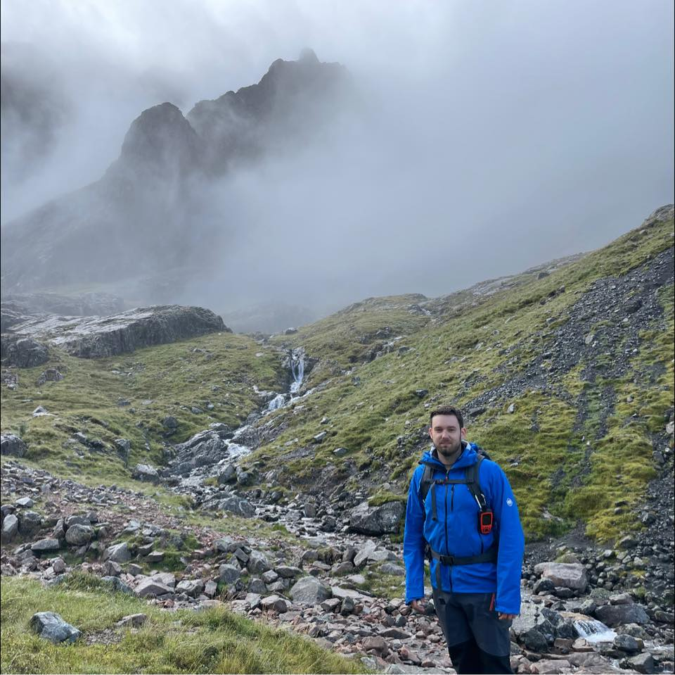

About Me
Hello! I'm Jake. I'm passionate about astronomy and hiking.
My love for astronomy began when I grew up in one of the darkest places in the world, rural Australia. I started with a small star tracker and a DSLR camera, and over the years, I've upgraded to a telescope, dedicated astro camera and high end astrophotography mount.
When I'm not stargazing, you can often find me hiking the UK mountains!
Feel free to explore my astro images and hiking adventures on this website.
My Equipment
- Telescope: RC6, Askar FRA400, SharpStar 130 Hyperbolic Newtonian
- Camera: ASI2600MC
- Mount: Rainbow Astro RST-135
- Other accessories: ASI174MM Mini guide cam, ASIAIR